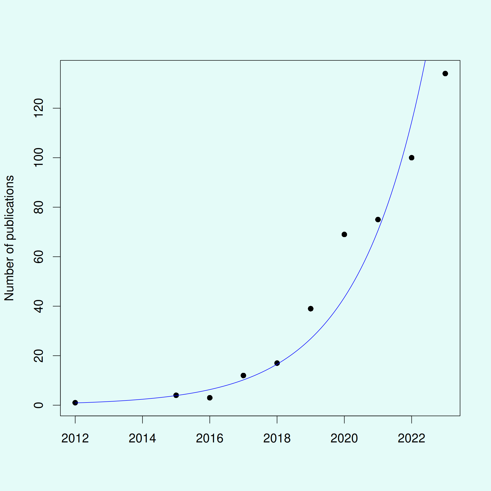
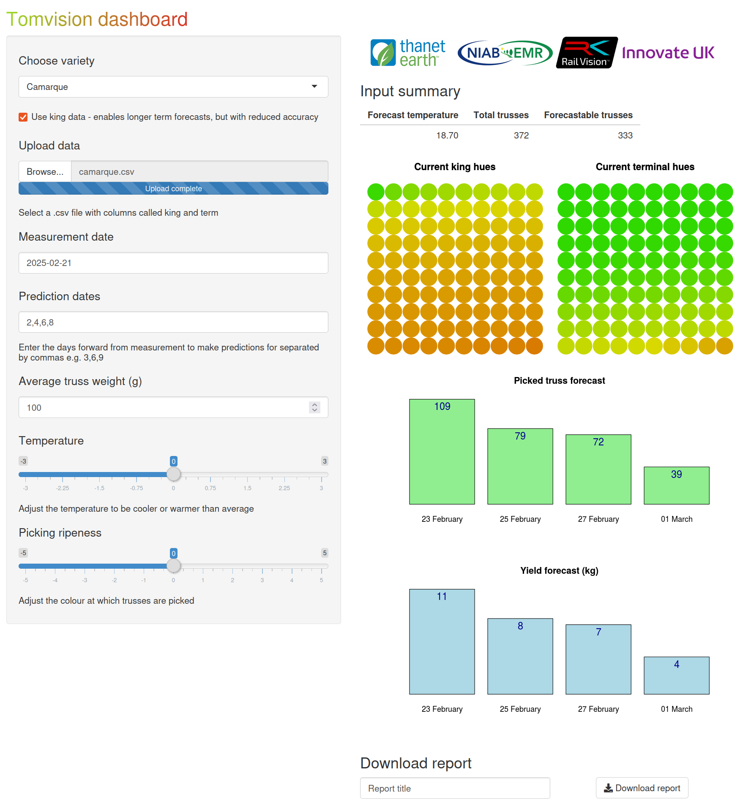
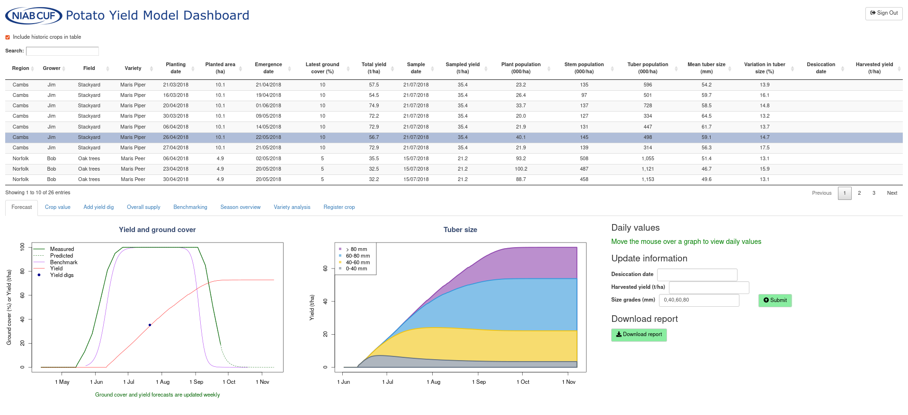
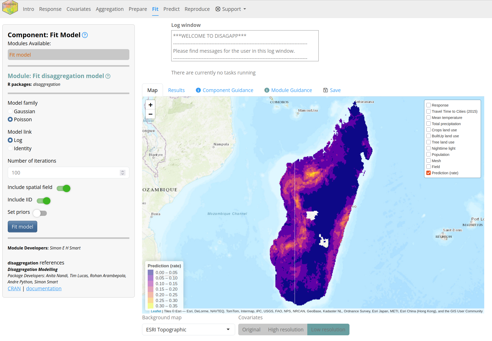
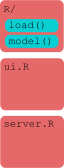
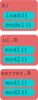
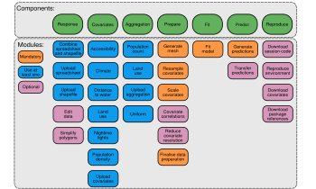
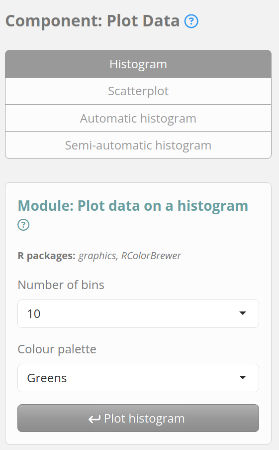

Shinyscholar
A template for creating reproducible Shiny applications
Simon Smart
June 7, 2025
Overview
- Use of Shiny in academia
- How Shinyscholar helps to avoid common problems
- How to use
create_template()to make an app - How to develop modules
- Please ask questions!
About me
- Background in plant sciences and agricultural science
- Software developer in the Department of Population Health Sciences at the University of Leicester with Tim Lucas
- Latecomer to R, starting in 2018
- Quickly fell in love with Shiny
Tomvision
Potato Yield Model Dashboard
Disagapp simplifies disaggregation regression https://disagapp.le.ac.uk/
Shiny apps are becoming increasingly popular in academia
- The low barrier to entry makes Shiny popular
- Substantially increased apps as a method of dissemination
- “shiny app” or “shiny application” in Web of Science:
The ease of development provides advantages and disadvantages
- Simple apps can be created in an afternoon
- Academics rarely have training in software development
- What started simple can quickly snowball to become very complex
Data flows through an analysis in discrete steps

- Adapted from Wickham (2022)
What characteristics should academic apps have?
- Open
- Attributable
- Instructive
- Reproducible
- Reliable
- Maintainable
There are many ways to structure shiny apps
There are many ways to structure shiny apps


There are many ways to structure shiny apps


50 apps published in 2023 were surveyed to determine current practices

The size and structure of codebases varied substantially

Other frameworks exist for making production quality shiny apps
{rhino}by Appsilon: dashboard-focused{golem}by ThinkR: good but generic{teal}by Insight Engineering / Roche: pharma-focused
{shinymeta} can also be used to create reproducible apps
- Developed by Posit
- Requires a lot of refactoring / unusual syntax
- Unclear if it’s suited to large apps
Wallace is an app for modelling species distributions

Wallace is an app for modelling species distributions
- In development since 2015 with two major releases
- Feature-rich with many ideal characteristics:
- Error messages
- Logging
- Save and load
- Reproducible
- Cites packages used
- Kass et al. (2018) DOI: 10.1111/2041-210X.12945
- Kass et al. (2022) DOI: 10.1111/ecog.06547
Wallace provided the foundation to create shinyscholar
- Lots of useful features that are difficult to implement from scratch
- Removed all the modules
- Adapted files so they could be edited programmatically
Various new features have been added since
- Updated UI
- Viewing source code
- Running async tasks
- End-to-end testing with {shinytest2}
- Simplified reproducibility
- Long-term reproducibility via {renv}
- Automated tedious coding
Installation
install.packages("shinyscholar")installs all you need to create new apps- The package also includes an example app, which requires
install.packages("shinyscholar", dependencies = TRUE)to run
Shinyscholar enforces a strict structure
- Structured as a package
- Analyses are split into components and modules
- Each module calls a function
- Each module is reproduced by a markdown chunk
- Data is passed between modules through
common
This structure has various advantages
- Modules are self-contained
- New modules slot in easily
- Explicit for developers where code is located
Overview of the live demo
- The package contains an example app
- We’ll create a similar app and copy some of the modules
- Then we’ll develop a new module and go through each of the steps to develop it
create_template() requires a dataframe of modules
| component | long_component | module | long_module | map | result | rmd | save | download | async |
|---|---|---|---|---|---|---|---|---|---|
| select | Select data | async | Upload your own data | TRUE | FALSE | TRUE | TRUE | FALSE | TRUE |
| select | Select data | query | Query a database to obtain data | FALSE | FALSE | TRUE | TRUE | FALSE | FALSE |
| transform | Transform data | filter | Filter the data | TRUE | TRUE | TRUE | TRUE | TRUE | FALSE |
| plot | Plot data | hist | Plot the data as a histogram | FALSE | TRUE | TRUE | TRUE | TRUE | FALSE |
| plot | Plot data | scatter | Plot the data as a scatterplot | FALSE | TRUE | TRUE | TRUE | TRUE | FALSE |
Modules in disagapp
common is an object passed between modules
- A shared environment for storing data
- Avoids having to manually manage what data each module interacts with
- Helps ensure consistent use of variable names
- All set to
NULLby default common$reset()allows it to be reset
common in Disagapp
shaperesponse_nameaggagg_prepagg_prep_lorescovs
covs_prepcovs_prep_lorescovs_matrixcovs_summarymeshprep
fitfit_plotpredtransfermap_layerspoly
create_template() creates an empty app üöÄ
common_objects = c("raster", "histogram", "scatter")
shinyscholar::create_template(
path = file.path("~", "Documents"), name = "SSdemo", author = "Simon Smart",
include_map = TRUE, include_table = TRUE, include_code = TRUE,
common_objects = common_objects, modules = modules, install = TRUE)
SSdemo::run_SSdemo()Structure of the app files
├── DESCRIPTION Define dependencies
├── inst
│ └── shiny
│ ├── common.R Data objects shared between modules
│ ├── global.R Loads package and modules
│ ├── ui_helpers.R Functions to create module UI
│ ├── server.R App server
│ ├── ui.R App UI
│ ├── modules
│ │ ├── core_code.R Displays code
│ │ ├── core_intro.R Produces introductory walkthrough
│ │ ├── core_load.R Loads app
│ │ ├── core_mapping.R Creates map
│ │ ├── core_save.R Saves app
│ │ ├── select_async.md Module guidance
│ │ ├── select_async.R Module UI and server
│ │ ├── select_async.Rmd Reproduces the module
│ │ ├── select_async.yml Module configuration
│ │ ├── ... (repeated for other modules)
│ ├── Rmd
│ │ ├── gtext_load.Rmd Guidance text for each component
│ │ ├── gtext_plot.Rmd
│ │ ├── gtext_rep.Rmd
│ │ ├── references.Rmd Template for rep_refPackages
│ │ ├── text_about.Rmd Main panel on intro tab
│ │ ├── text_how_to_use.Rmd Detailed instructions
│ │ ├── text_intro_tab.Rmd Sidebar on intro tab
│ │ ├── text_loadsesh.Rmd Guidance for loading
│ │ ├── text_team.Rmd Lists developers
│ │ ├── userReport_intro.Rmd Introduction to markdown
│ │ └── userReport_module.Rmd
│ └── www
│ ├── css
│ │ └── styles.css
│ ├── favicon.ico
│ ├── js
│ │ └── shinyjs-funcs.js
│ └── logo.png
├── R
│ ├── helper_functions.R Various utility functions
│ ├── run_demo.R Function to run app
│ ├── select_async_f.R Function for each module
│ ├── select_query_f.R
│ ├── plot_histogram_f.R
│ └── plot_scatter_f.R
└── tests
└── testthat
├── test-load_user.R Tests for each module
├── test-load_database.R
├── test-plot_histogram.R
└── test-plot_scatter.R
Shiny modules split code into manageable chunks
input and output IDs are namespaced
- When used inside a module with an id of
load,ns()appendsload-to the ID soload-plotandload-numberare created
By default though there is a lot to manage:
- Sourcing the functions
- Calling the functions
- Passing data between modules
- Reactivity between modules
- Shinyscholar takes care of all of these!
Modules in shinyscholar have a broader definition and several files üöÄ
- In
R/:- Function:
<component>_<module>_f.R
- Function:
- In
inst/shiny/modules/:- Shiny module:
<component>_<module>.R - Rmarkdown:
<component>_<module>.Rmd - Guidance:
<component>_<module>.md - Configuration:
<component>_<module>.yml
- Shiny module:
- In
tests/:- Tests:
test-<component>_<module>.R
- Tests:
The logging system provides a flexible way to inform users
- Messages can be sent to users via
common$logger |> writeLog() - Either from inside the module function or the module server function
The logging system provides a flexible way to inform users
- When
type = "info" / "warning" / "error"ashinyalert::shinyalert()modal is also displayed type = "starting" / "complete"keep track of slow tasks- When
logger = NULLinside a function, i.e. when used in the rmarkdown messages are passed tomessage(),warning()orstop()instead
Unusually, data is not reactive
- Shiny is built to be reactive, but for large apps it can be difficult to control
- Data in shinyscholar is not reactive
{gargoyle}is used instead to explicitly trigger reactivity
Gargoyle is used to trigger events
- Each module’s identifier can be used to trigger events
init(<id>)is called during app start uptrigger(<id>)is called when a module runs successfullywatch(<id>)is used inside any outputs to be generated / other code that needs to run
Module development workflow
Data flow in shiny vs shinyscholar
flowchart TD A[Input in UI] --> |input$| B([Computation in server]) B --> |output$| C(Output in UI) class A sin class B sser class C sout
flowchart TD A[Input in UI] --> |input$| C([Functions]) B[Existing data] --> |common$| C([Functions]) C --> |common$| D([Store in common]) D --> |output$| E(Output in Results) class A sin class B sin class C sser class D sser class E sout
Developing the module function
- Functions split the business logic from the shiny logic and enable reproducibility
- First of all develop the function in an rmarkdown file
- Once it works, move it to the function file and document
- Parameters should either be
commonobjects orinputvalues
Functions should be written defensively
- Check that inputs are correct and log any errors
- May be not always be necessary when used in the app but we’re also creating user-facing functions used in the rmarkdown
- Catch any other errors and fail gracefully instead of crashing the app
The select_query() function in the example app is most complex üöÄ
select_query <- function(poly, date, token, logger = NULL) {
check_suggests()
if (!("matrix" %in% class(poly))){
logger |> writeLog(type = "error","poly must be a matrix")
return()
}
if (!is.character(date) || is.na(as.Date(date, format = "%Y-%m-%d"))) {
logger |> writeLog(type = "error","date must be a string with the format YYYY-MM-DD")
return()
}
if (nchar(token) < 200 || is.null(token)){
logger |> writeLog(type = "error", "This function requires a NASA token - see the documentation")
return()
}
# convert to terra object to calculate area and extent
terra_poly <- terra::vect(poly, crs = "EPSG:4326", type = "polygons")
area <- terra::expanse(terra_poly, unit = "km")
if (area > 1000000) {
logger |> writeLog(type = "error", paste0("Your selected area is too large (",round(area,0)," km2)",
" when the maximum is 1m km2. Please select a smaller area"))
return()
}
bbox <- c(min(poly[,1]), max(poly[,2]), max(poly[,1]), min(poly[,2]))
search_url <- glue::glue("https://ladsweb.modaps.eosdis.nasa.gov/api/v2/content/archives?products=MCD15A2H&temporalRanges={date}®ions=[BBOX]W{bbox[1]}%20N{bbox[2]}%20E{bbox[3]}%20S{bbox[4]}&archiveSets=61")
check <- check_url(search_url)
if (!is.null(check)){
image_req <- httr2::request(search_url ) |>
httr2::req_auth_bearer_token(token) |>
httr2::req_perform()
image_resp <- image_req |> httr2::resp_body_html()
image_links <- xml2::xml_find_all(image_resp, "//a")
image_urls <- xml2::xml_attr(image_links, "href")
} else {
logger |> writeLog(type = "error", "The FAPAR API is currently offline")
return()
}
# download and stitch together tiles
raster <- NULL
for (file in image_urls){
if (tools::file_ext(file) == "hdf"){
req <- httr2::request(file) |>
httr2::req_auth_bearer_token(token) |>
httr2::req_perform()
temp <- tempfile(fileext = ".hdf")
writeBin(httr2::resp_body_raw(req), temp)
tile <- terra::rast(temp)$Fpar_500m
if (is.null(raster)){
raster <- tile
} else {
raster <- terra::merge(raster, tile)
}
}
}
if (is.null(raster)){
logger |> writeLog(type = "error", paste0("No data was found for your selected area. ",
"This could be due to cloud coverage or because the area is not over land."))
return()
}
# reproject and crop
raster <- terra::project(raster, "EPSG:4326")
raster <- terra::crop(raster, terra_poly)
# count missing values and log accordingly
missing_values <- length(terra::values(raster)[terra::values(raster) > 1])
urban <- length(terra::values(raster)[terra::values(raster) == 2.5])
water <- length(terra::values(raster)[terra::values(raster) == 2.54])
if (missing_values == terra::ncell(raster)) {
logger |> writeLog(type = "error", paste0("No data was found for your selected area. ",
"This could be due to cloud coverage or because the area is not over land."))
return()
}
if (missing_values > 0) {
message <- glue::glue("{missing_values} pixels were removed.")
if (urban > 0) {
message <- paste(message, glue::glue("{urban} pixels were removed due to urban land use."), sep = " ")
}
if (water > 0) {
message <- paste(message, glue::glue("{water} pixels were removed due to water coverage."), sep = " ")
}
logger |> writeLog(message)
}
# remove missing values and rescale data to 0 - 100 %
raster <- terra::clamp(raster, upper = 1, value = FALSE) * 100
raster
}Unit testing {.mediumcode} üöÄ
- Each module should have unit tests and end-to-end tests
- Unit test tests that the module function behaves as you expect
- End-to-end tests check that the whole module works
The shiny module contains several functions
<identifier>_module_ui()- user inputs<identifier>_module_server()- server functionOptionally:
<identifier>_module_result()- display outputs<identifier>_module_map()- modify the map<identifier>_module_rmd()- transfer data to rmarkdown
Only Input functions are included in the module UI
- Input IDs need wrapping in
ns() - Everything is wrapped in
tagList
Input widgets are inserted to the sidebar
The server contains an observeEvent() triggered by input$run
- Inputs are checked and any errors logged
- Inputs are passed to the module function
- Input values are stored in
common$meta - Module function is called and results stored in
common - Use
trigger()to run anything that relies on the results - Use
show_map()orshow_results()to change the view
The server contains an observeEvent() triggered by input$run
observeEvent(input$run, {
# WARNING ####
if (is.null(common$raster)) {
common$logger |> writeLog(type = "error", "Please load a raster file")
return()
}
# FUNCTION CALL ####
raster_name <- c(common$meta$select_query$name, common$meta$select_async$name, common$meta$select_user$name)
histogram <- plot_hist(common$raster, as.numeric(input$bins), input$pal, raster_name, common$logger)
# LOAD INTO COMMON ####
common$histogram <- histogram
# METADATA ####
common$meta$plot_hist$bins <- as.numeric(input$bins)
common$meta$plot_hist$pal <- input$pal
common$meta$plot_hist$name <- raster_name
# TRIGGER ####
trigger("plot_hist")
show_results(parent_session)
shinyjs::show("download")
})Outputs are triggered when the module runs successfully
Outputs are inserted into the results tab {.mediumcode} üöÄ
- The visible results are determined by the module currently selected
Saving and loading
- When the app is saved,
commonis saved to an.Rds - Each module’s input values are stored in
common$state - Distinct from those stored in
common$metawhich are only for modules that have been run
Saving and loading
- Loading reloads data into
common - Input values are restored from
common$state - Module outputs are retriggered from
names(common$meta)
The ability to save is also helpful during development
- If working on a feature that relies on results from a slow step, it can be tedious to rerun each time a change is made
- We can load
commonin outside shiny and use the exact data used in the app - Set
load_file_pathto point to a save file and it will be loaded automatically
save_and_load() takes care of tedious coding {.mediumcode} üöÄ
- Currently only default
{shiny}inputs are supported
Markdown files can be merged to replicate the analysis
- When a module is used an object becomes
TRUE - Input values are stored and knitted into the markdown
- Each chunk of the markdown calls the same function as the module in the app
- The chunks for used modules are combined into one
.Rmdfile
Input values are copied into the rmarkdown
To create a reproducible chunk {.mediumcode} üöÄ
You can also add data directly to the markdown
- If the output of a module is a small dataframe (~ 1000 values) then you can insert the
commonobject straight into the markdown - Especially useful if files are uploaded as that can’t be reproduced automatically
- Alternatively, download a
.zipof data and load that in the markdown (example below)
- https://github.com/simon-smart88/disagapp/blob/main/inst/shiny/modules/rep_covs.R
- https://github.com/simon-smart88/disagapp/blob/main/inst/shiny/modules/rep_covs.Rmd
- https://github.com/simon-smart88/disagapp/blob/d7739ff034b2bf12760b54516a6d1f087e42b97c/inst/shiny/modules/rep_markdown.R#L77
As for saving and loading, metadata() takes care of some of the tedium üöÄ
- Unlike for
save_and_load()this requires manual work afterwards and can therefore only be called once for each module
metadata(".") # for all modules
metadata(".", module = "component_module") # for a single module
numericInput(ns("number"), "Enter a number", value = 5)
common$meta$component_module$number <- input$number # store
component_module_number <- common$meta$component_module$number # transfer to Rmd
{{component_module_number}} # use in RmdEnd-to-end tests üöÄ
test_that("{shinytest2} recording: e2e_select_user", {
app <- shinytest2::AppDriver$new(app_dir = system.file("shiny", package = "demo"), name = "e2e_select_user")
app$set_inputs(tabs = "select")
app$set_inputs(selectSel = "select_user")
app$click("select_user-run")
common <- app$get_value(export = "common")
expect_true(is.null(common$scatter))
})Asynchronous modules
- A major limitation of R and therefore Shiny is that it is single-threaded by default
- When a slow operation is occurring apps become unresponsive to the user and anyone else connected to the same instance
ExtendedTaskwas added in Shiny v1.8.1 and enables tasks to run in the background
Slow running tasks can block the UI
Asynchronous modules
- When
async = TRUEfor a module a different skeleton is used - The structure is different since starting the task and dealing with the results are separate
- The number of currently running tasks is shown under the logger
The normal logger can’t be accessed from inside async tasks
asyncLog()is similar towriteLog()but can be used inside async functions- Use
async = FALSEas the last parameter instead oflogger = NULL return(async %>% asyncLog("message))sends errors back
We can listen for messages in the server and then pass to the logger
Info and support
- README at https://simon-smart88.github.io/shinyscholar/index.html
- Bug reports and feature requests: https://github.com/simon-smart88/shinyscholar/issues
- Any other questions: simon.smart@cantab.net
Acknowledgments
- Tim Lucas for supervision
- Wellcome for funding
- Wallace developers